Overview
YOUR RESPONSE GOES HERE
Section I: Bezier Curves and Surfaces
Part 1: Bezier Curves with 1D de Casteljau Subdivision
Briefly explain de Casteljau's algorithm and how you implemented it in order to evaluate Bezier curves.
The de Casteljau's algorithm is a way we used to evaluate the Bezier cruves. It starts with a few control points
and provides a pyramid of coefficients by doing linear interpolation between adjacent points at each level. We implement
BezierCurve::evaluateStep(...) to perform the algorithm. The function doesnt't give the final coefficients
right away. Instead, it evaluates the coefficients at each step. We loop through all control points at the current step,
perform linear interpolation between adjacent points, and return a list of coefficients at this step.
Take a look at the provided .bzc files and create your own Bezier curve with 6 control points of your choosing. Use this Bezier curve for your screenshots below.
Show screenshots of each step / level of the evaluation from the original control points down to the final evaluated point. Press E to step through. Toggle C to show the completed Bezier curve as well.
|
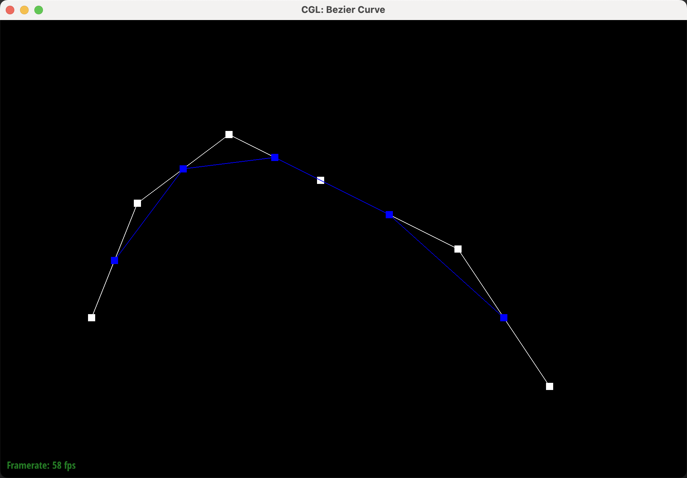
|
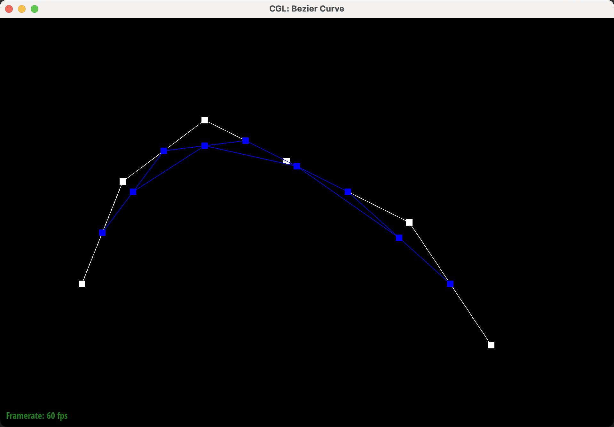
|
|
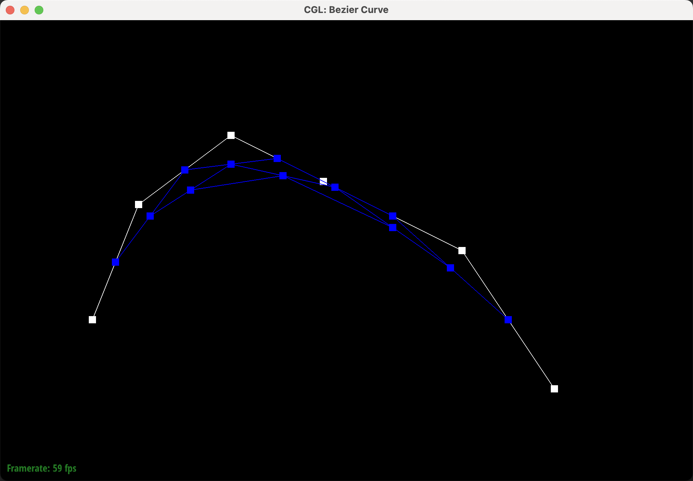
|
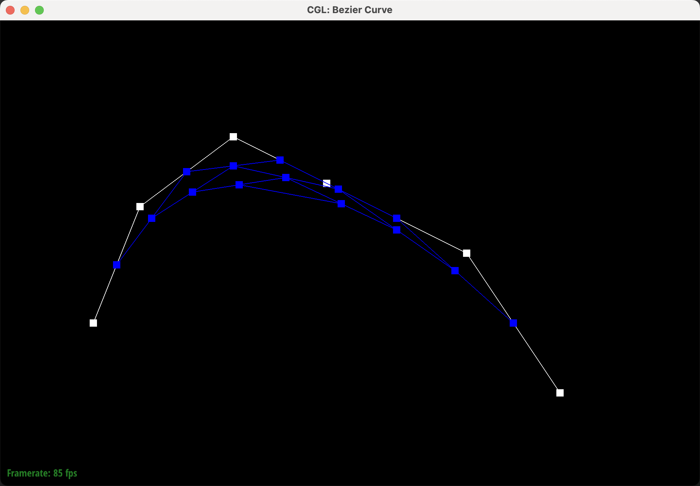
|
|
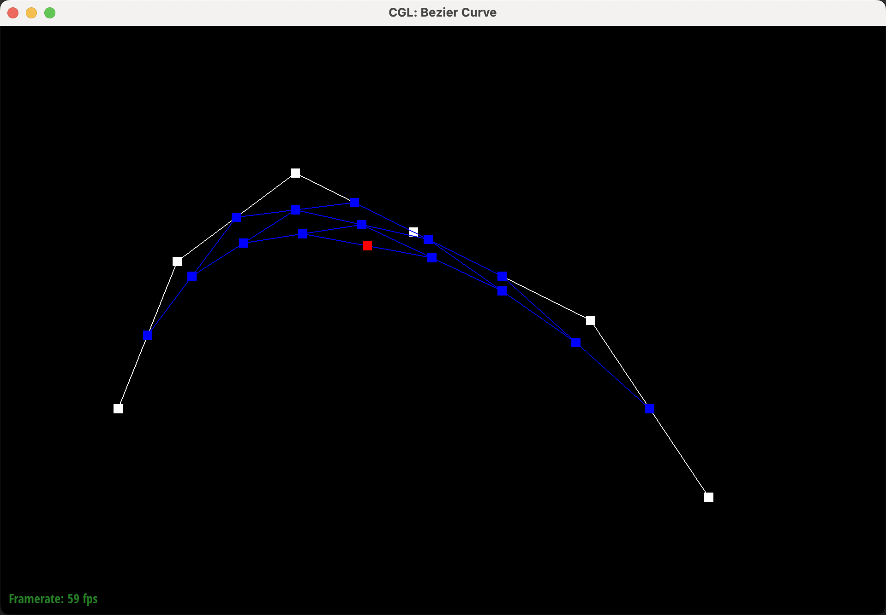
|
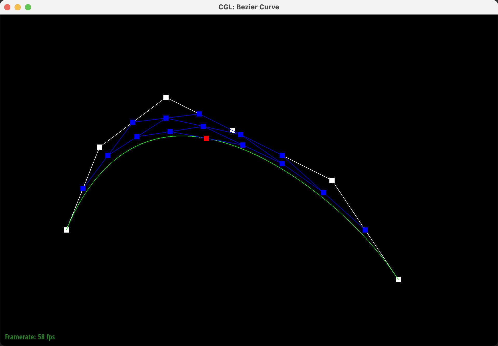
|
Show a screenshot of a slightly different Bezier curve by moving the original control points around and modifying the parameter \(t\) via mouse scrolling.
|
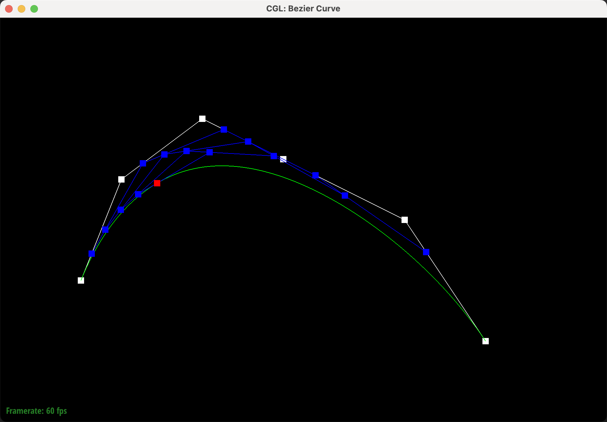
|
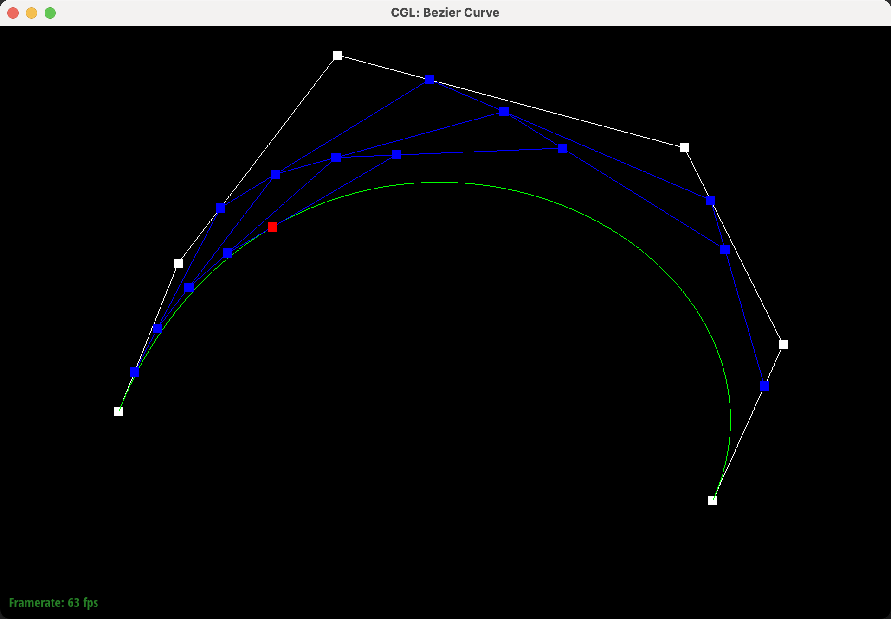
|
Part 2: Bezier Surfaces with Separable 1D de Casteljau
Briefly explain how de Casteljau algorithm extends to Bezier surfaces and how you implemented it in order to evaluate Bezier surfaces.We can extend the de Casteljau algorithm to 3D surfces, simply by applying the algorithm separately in u-direction and v direction. Below is a step-by-step instruction.
-
To evaluate our Bazier surface, we first implement
BezierPatch::evaluate1D(...), which evaluates the final coefficient on the top of the pyramid in u-direction in 1D. -
Next, we implement
BezierPatch::evaluate(...). This function callsBezierPatch::evaluate1D(...)at each iteration step to evaluate one "moving curve" in u-direction. Using this 1D "moving" curves, we evaluate the surface in v-direction.
Show a screenshot of bez/teapot.bez (not .dae) evaluated by your implementation.
Section II: Triangle Meshes and Half-Edge Data Structure
Part 3: Area-Weighted Vertex Normals
Briefly explain how you implemented the area-weighted vertex normals.
- Firstly, we traversed all the triangles that torch this vertex and skipped the triangle which is in the boundary.
- Secondly, we calculated the area of each triangle by finding three vertices of this triangle, constructing two vectors AB, AC and using \(S_{\Delta} = \frac{1}{2}|AB \times AC|\).
- Thirdly, we used the cross product \(AB \times AC\) calculated above as the normal vector of this triangle face.
- Finally, we let areas of triangles as weights and calculated the area-weighted normals of all these triangles, which is the normal vector of this vertex.
Show screenshots of dae/teapot.dae (not .bez) comparing teapot shading with and without vertex normals. Use Q to toggle default flat shading and Phong shading.
Part 4: Edge Flip
Briefly explain how you implemented the edge flip operation and describe any interesting implementation / debugging tricks you have used.We started with the basic edge flip model, which is composed of two triangles and we tried to implement flip on it by changing the pointers in each element. There are four kinds of elements: vertex, halfedge, edge and face. In this basic model, we have 4 vertices, 6 halfedges(including the halfedges before filpping and after flipping), 6 edges and 2 faces. Additionally, before we started, we checked whether the edge is a boundary. If so, we will do nothing on it.
- Firstly, since "face" has one private variable -- halfedge, we changed the halfedge to ensure that the halfedge represents the correct triangle after edge flipping.
- Secondly, since "vertex" has one private variable -- halfedge, we changed the halfedge to ensure that even if the orignal halfedge of the vertex is flipped, the vertex can still have the valid halfedge.
- Thirdly, since "halfedge" has five private variables -- next, twin, vertex, edge and face, we changed them correspondingly to ensure correctness. It's worth mentioning that we changed four halfedges not flipped first and then changed the flipped halfedge. Since we need to use the properties of the flipped halfedges to update the other halfedges' variables.
- Finally, since "edge" has one private variables -- halfedge, we just change the halfedge of the flipped edge to the halfedge after flipping it.
Show screenshots of the teapot before and after some edge flips.
Write about your eventful debugging journey, if you have experienced one.
At first, we accidentally changed the properties of the flipped edge first instead of first using its properties to change the properties of other elements.
Part 5: Edge Split
Briefly explain how you implemented the edge split operation and describe any interesting implementation / debugging tricks you have used.Unlike the edge flip operation, the edge split operation involves dividing the input edge at the midpoint and connect the two unshared vertices in the two adjacent triangles, which requires creating new edges, halfedges, faces, and the midpoint vertex.
-
In the basic case with two adjacent triangles sharing one edge and two vertices, we need to add three more edges: $e_1$, $e_2$, and $e_3$.
Combined with the original edge $e_0$, they become the four inner edges that split the two traingles into four. Also, we need to initialize
isNewvalue of the new edges. For $e_2$ and $e_3$, we setisNew = truebecause they are edges that doesn't exist in the mesh before. However, for $e_0$ and $e_1$, we setisNew = false, since they overlap with the original edge. - We also need to add two halfedges for each of the newly created edge. For $e_0$, its halfedges already exist, so we do nothing for now. For $e_1$, $e_2$, and $e_3$, we create in total six halfedges, two for each pointing into opposite directions.
- Now we have four triangles, meaning that we have four faces. Thus, we need to add two more faces.
- Lastly, we add a new vertex m at the midpoint of $e_0$. Its position would be the average position of the vertices at the two ends of $e_0$.
Show screenshots of a mesh before and after a combination of both edge splits and edge flips.

|

|
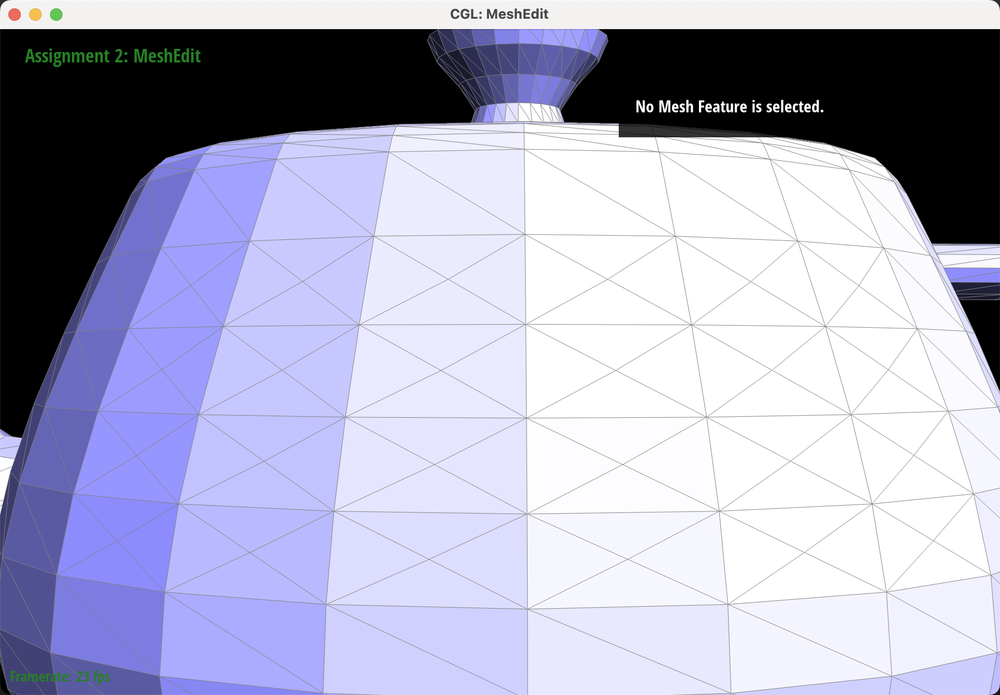
|
Show screenshots of a mesh before and after a combination of both edge splits and edge flips.
|
|
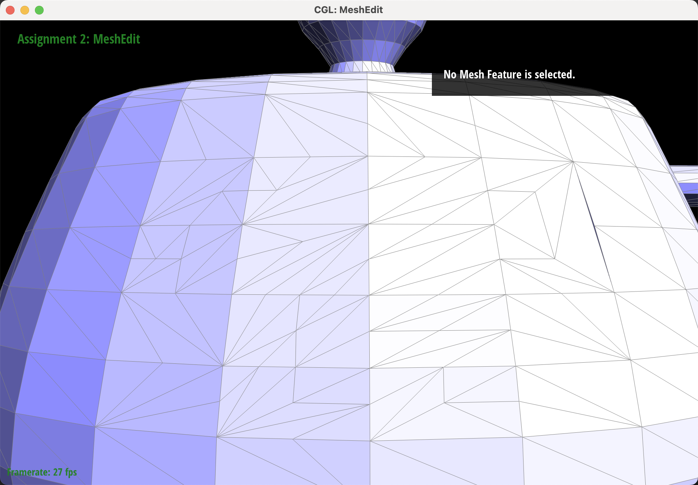
|
Initially, our operation functioned correctly, but it started causing a segmentation fault when we attempted to split a large number of edges. We eventually realized that updating the halfedges within the "boundary" (not the boundary of the mesh) of the two original triangles wasn't sufficient. We also needed to handle their twins—the halfedges outside the "boundary"—to resolve the segmentation fault issue.
If you have implemented support for boundary edges, show screenshots of your implementation properly handling split operations on boundary edges.
YOUR RESPONSE GOES HERE
Part 6: Loop Subdivision for Mesh Upsampling
Briefly explain how you implemented the loop subdivision and describe any interesting implementation / debugging tricks you have used.
-
The first step is to set
isNew = falsefor all edges and vertices of the mesh. This would avoid splitting and flipping wrong edges when we keep upsampling. -
The next step is to iterate through all vertices
vand calculate the new positions for them. We store these values in
v->newPosition. -
Then, we iterate through all edges
e, calculate the positions for all new vertices that we are going to add, and store the position values ine->newPosition. -
Next, we perform edge split. We iterate through all edges and only split those connecting two old vertices (
v->isNew = false) At this step, a bunch of new vertices are created. For each newly created v at the midpoint of edge e, we assigne->newPositiontov->newPosition. -
After splitting edges, we flip all new edges (
e->isNew = true) that connecting exactly one old vertex and one new vertex
(v1->isNew + v2->isNew == 1). -
Finally, we copy
v->newPositiontov->positionfor every vertex v currently in the mesh.
Take some notes, as well as some screenshots, of your observations on how meshes behave after loop subdivision. What happens to sharp corners and edges? Can you reduce this effect by pre-splitting some edges?
We observe that the sharp corners and edges totally disappear after loop subdivision. Here, the torus with six corners become a smooth circle ring. If we pre-split the edges on the sharp corners, the mesh somehow preserve its shape.
|
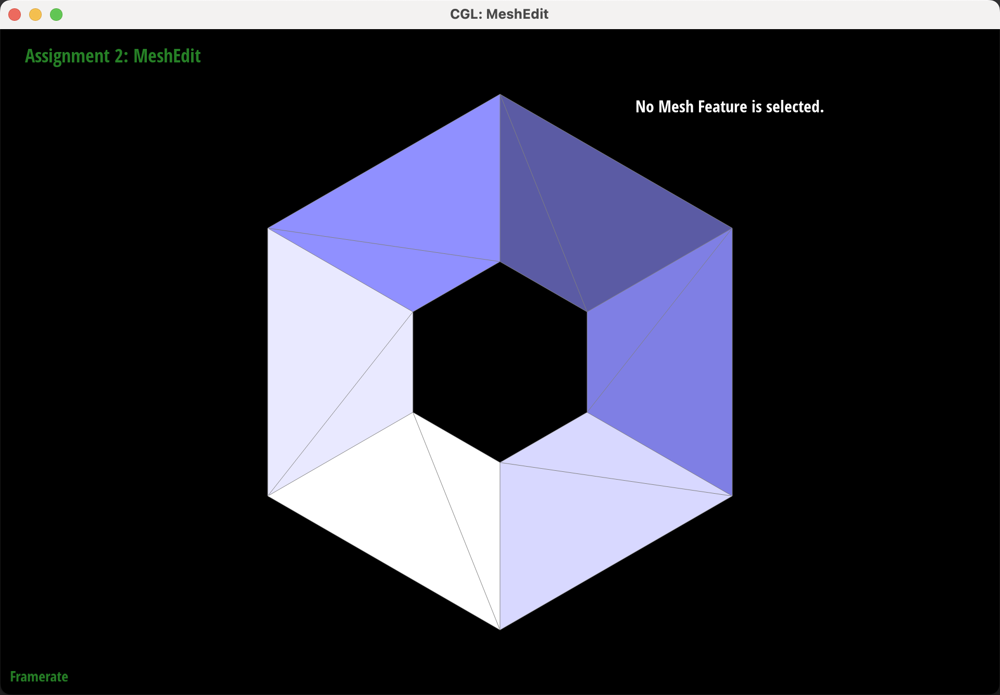
|
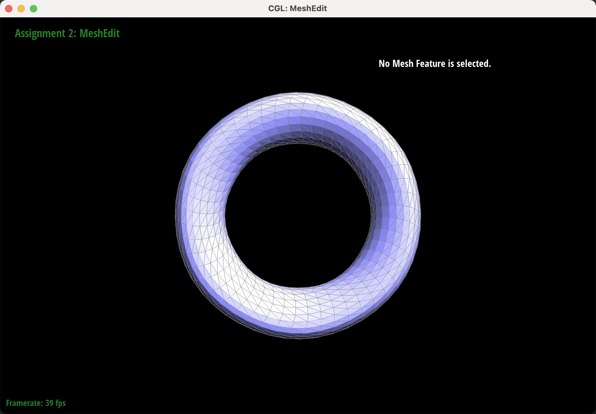
|
|
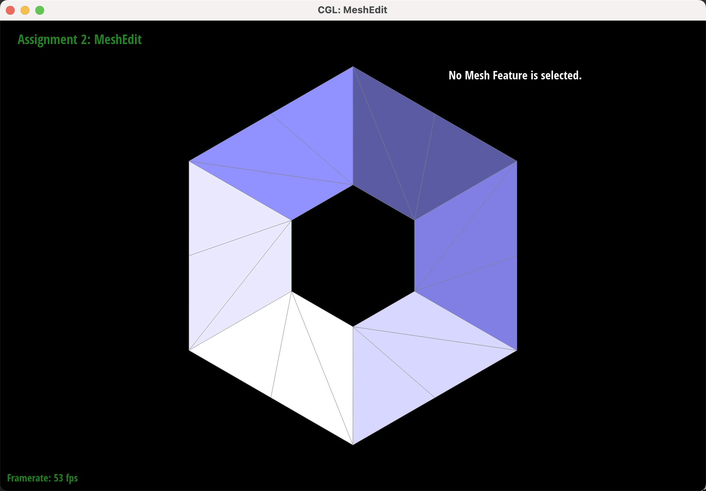
|
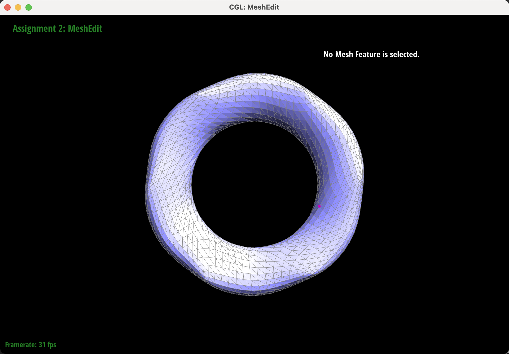
|
Load dae/cube.dae. Perform several iterations of loop subdivision on the cube. Notice that the cube becomes slightly asymmetric after repeated subdivisions. Can you pre-process the cube with edge flips and splits so that the cube subdivides symmetrically? Document these effects and explain why they occur. Also explain how your pre-processing helps alleviate the effects.
The strange asymmetry observed during cube subdivision is, in fact, an inherent outcome of the mesh's triangulation. It's noteworthy that the underlying geometry divides each face along a single diagonal, resulting in a specific orientation for the initial triangles. Consequently, as these triangles undergo subdivision, the new triangles maintain the same orientation as the original ones. Thus, the asymmetry is established during the initial round of subdivision and preserves as we continue upsampling.
|
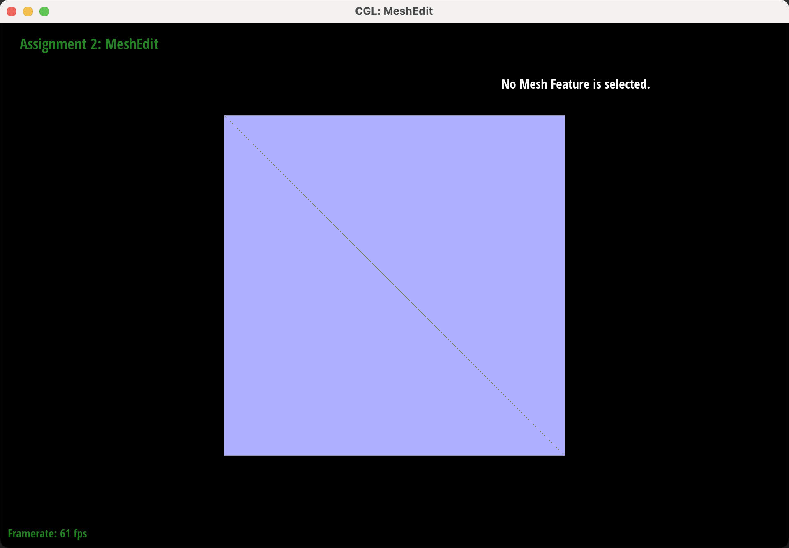
|
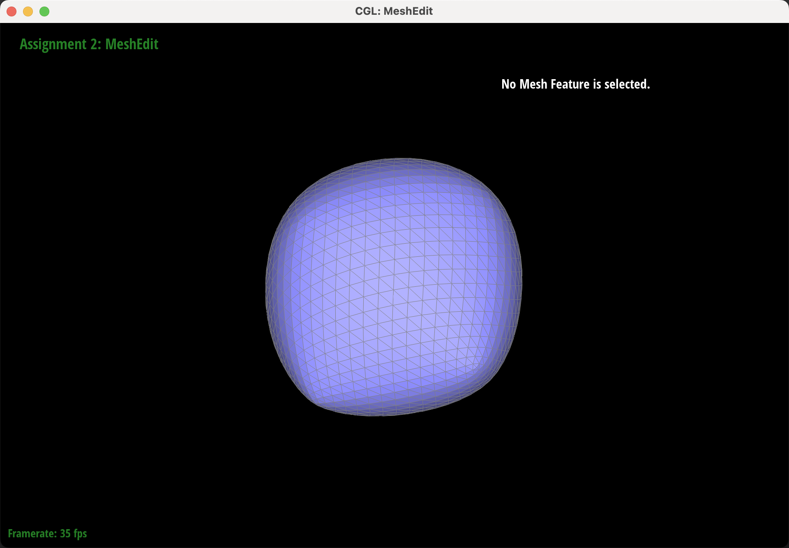
|
|
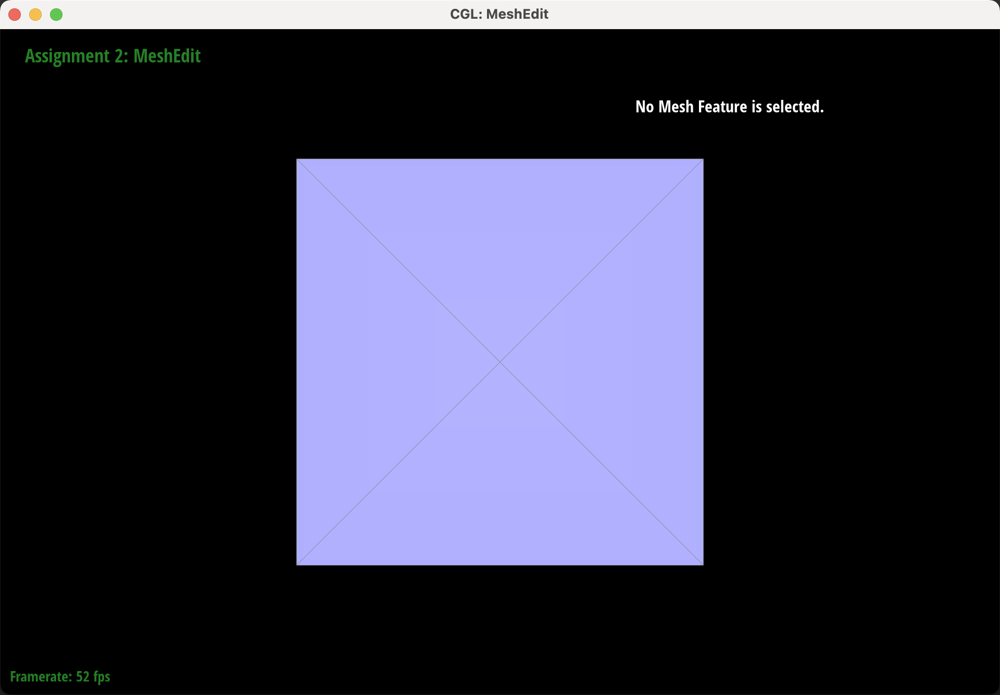
|
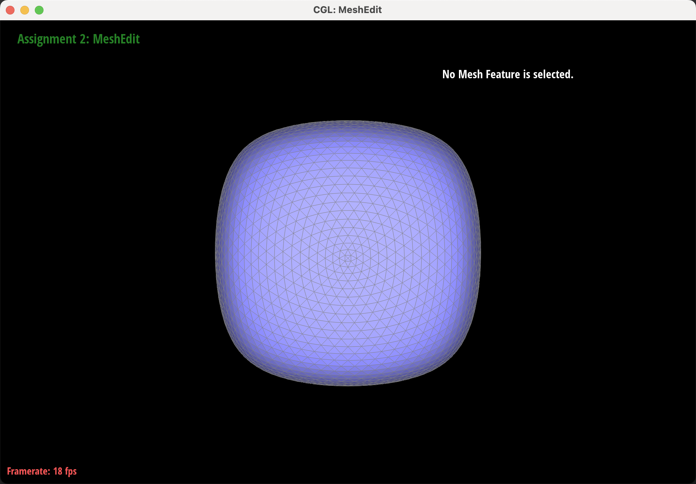
|
If you have implemented any extra credit extensions, explain what you did and document how they work with screenshots.
YOUR RESPONSE GOES HERE
Part 7 (Optional, Possible Extra Credit)
Save your best polygon mesh as partsevenmodel.dae in your docs folder and show us a screenshot of the mesh in your write-up.YOUR RESPONSE GOES HERE
Include a series of screenshots showing your original mesh and your mesh after one and two rounds of subdivision. If you have used custom shaders, include screenshots of your mesh with those shaders applied as well.
YOUR RESPONSE GOES HERE
Describe what you have done to enhance your mesh beyond the simple humanoid mesh described in the tutorial.
YOUR RESPONSE GOES HERE